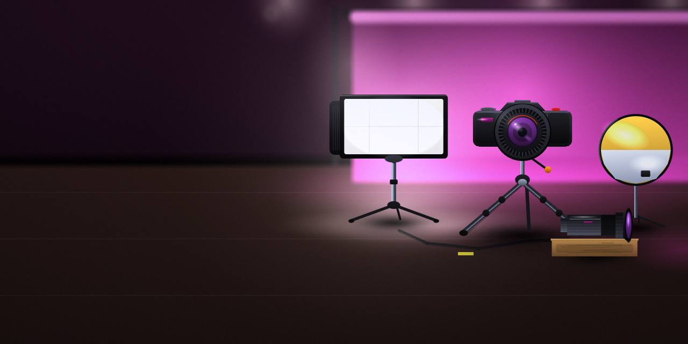
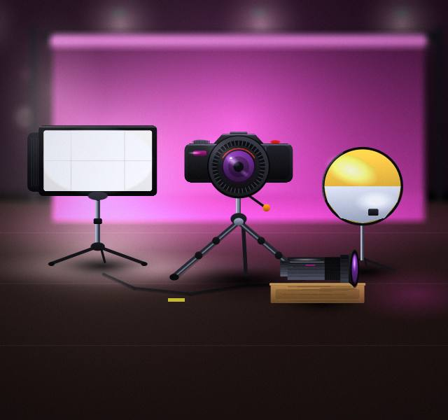
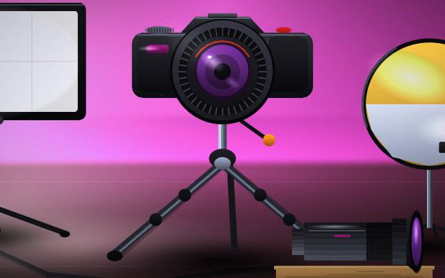
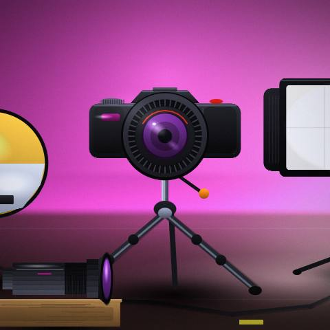
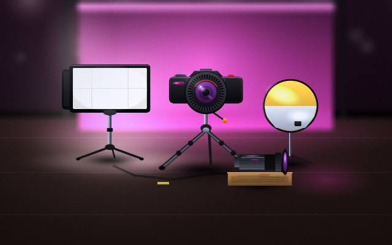
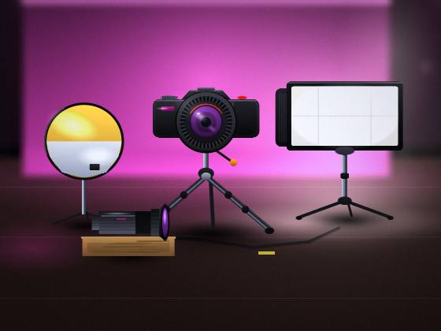

Shoots
Shoots: ask for details before you decide.

Photography Studio · Goa
Start a project and tell us what you need.

Ask to see work like yours.
You'll find us in Goa. Message us a few notes and we will reply.
Shoots: ask for details before you decide.
Ask to see examples of Portraits before you decide.
We shape Prints around where it will be used.
Share what you like and we'll plan Frames around it.
Feel free to ask us how Albums works and what to expect.




Show us what you like.
Scope, schedule and the shape of.
You give feedback; we polish until it's right.
And how to do it politely.
The first steps, without the jargon.
What to send and what to leave out.
Find us in Goa.
Certainly; that's what the first conversation is for.
Feel free to ask us when you book and we will explain the options.
We will tell you what to bring or prepare when you reach out.
Your project starts with a message.
Start a project